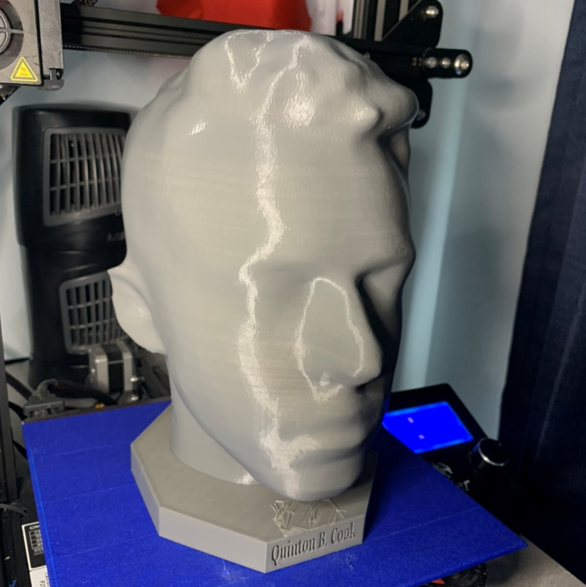
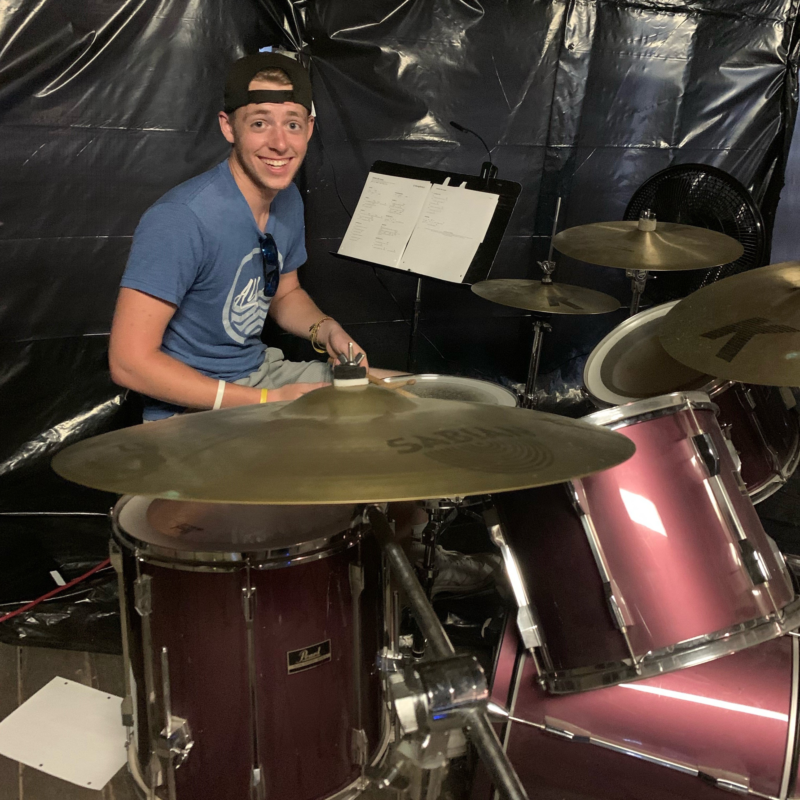

.png)
QUINTON B. COOK
QUINTON B. COOK
Quinton B. Cook, born February 2nd 2002,
is an aspiring computer engineer. He will earn a bachelor's degree in computer engineering with a minor in mechanical engineering from
Texas Tech University around the year 2025. He is well versed in HTML5, CSS, Java, and Python. He is also proficient using Autocad's Fusion 360
Quinton has much experience with communication coming from his time
abroad and from previous jobs. He is biligual speaking English and German, is learning Spanish, and plans to learn Japanese.
Quinton generally spends his free time CAD modeling or learning programming languages. He owns a Creality Ender 3 3D printer that he uses to print his CAD models. He has printed many things, from paddle shifters to a bust of his own head.
Quinton is not only interested in engineering either. He also has many other skills and talents learned over the years. It might surprise you for example, that he plays the drums. He has played in many organized bands including ones in school and for worship.
